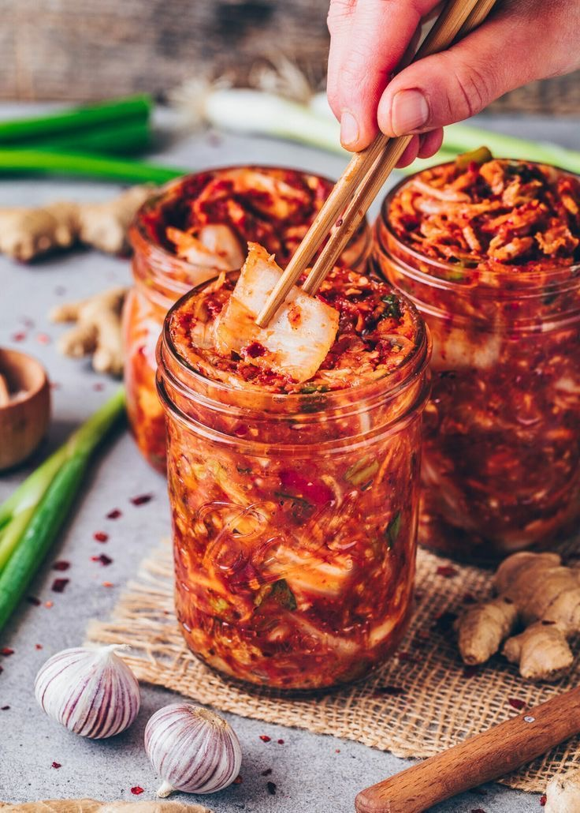

Kimchi de col clásico (배추김치)
Ingredientes
- 1 col china grande (aproximadamente 1kg)
- 50g de sal de mesa
- 70g de sal marina
- 450g de nabo daikon cortado en juliana
- 30g de cebollino cortados en tiras de 4cm
- 4 cebolletas cortadas por la mitad longitudinalmente y luego en tiras de 4cm
Pasta de harina
- 1 + 1/2 cucharadas de harina de arroz glutinoso o harina (sin levadura)
Pasta de harina
- 8 dientes de ajo
- 20g de jengibre
- 100g de cebolla
- 1 cucharada de gambas fermentadas (saeujeout) (opcional)
- 70g de pimienta roja molida gochugaru (página 14)
- 100ml de salsa de pescado
- 2 cucharaditas de salsa de soja
- 1 cucharada de azúcar sin refinar o azúcar de coco
- 2 cucharadas de vinagre de arroz
El kimchi es el plato nacional de Corea y se sirve en todas las comidas, así que este kimchi de col clásico es un buen comienzo. El kimchi casero lleva tiempo, pero una vez hecho se conserva en el frigorífico meses y el sabor es mejor que las marcas compradas. Las gambas fermentadas son opcionales; aportan un sabor a pescado más pronunciado que a los coreanos les encanta, pero si dudas, no las uses. Tendrá que fermentar al menos dos días en el frigorífico antes de poder comerlo. Cuando lo vayas a usar, coge solo lo que necesites y nunca refrigeres el kimchi sobrante en el mismo tarro, sino que consérvalo cubierto en otro recipiente para no contaminar el tarro original.
Empieza con la col. Corta unos 10cm de la base de la col y con cuidado divídela en dos en sentido longitudinal. Límpiala con agua del grifo, sobre todo entre las hojas.
En un cuenco o recipiente grande, mezcla 1 litro de agua con la sal de mesa. Esparce la sal marina por cada hoja de col, centrándote en el extremo más grueso y desde ahí sube hasta la parte más fina. Dispón la col boca abajo en un cuenco con agua salada. Deja en remojo 2 horas. Luego dale la vuelta para que se ablande otras 2 horas, hasta que las hojas estén mustias y se doblen fácilmente sin llegar a partirse.
Escurre la col y límpiala bien con agua del grifo al menos dos veces. Prueba la hoja. Debería estar muy salada, pero si te resulta demasiado fuerte, lava la col de nuevo y sécala por completo.
Entretanto, prepara la pasta de harina. Mezcla la harina con 2 cucharadas de agua. Con un tenedor o batidor bate bien para que no queden grumos. Cuando tenga una consistencia homogénea, vierte despacio 230ml de agua y remueve para que combine. Dispón la mezcla en una cacerlo y, sin dejar de remover, deja que arranque a hervir. Cuando hierva, reduce para que se haga a fuego lento 5 minutos, hasta que espese y esté gelatinosa. Retira del fuego y deja que se enfríe por completo.
En un robot, mezlca todos los ingredientes de la pasta y la mezcla de harina que has dejado enfriar, hasts que la pasta sea homogénea. Transfiere a un cuenco grande junto con el nabo daikon, los cebollinos y las cebolletas, y mezcla bien hasta que se integren. Con cuidado y con la ayuda de una cuchara (o con las manos) dispón la mezcla sobre las dos mitades de col, asegurándote de cubrir cada hoja. Toma la hoja exterior de cada mitad y envuélvela alrededor de la col para asegurar la mezcla.
Transfiere la col a un tarro esterilizado o un recipiente hermético; deja unos 3cm entre la col y la tapa. Ciérralo herméticamente. Mantén el tarro a temperatura ambiente 2 días. Pasado este tiempo habrá empezado a fermentar y despedirá un aroma ligeramente agrio. Con una cuchara presiona el kimchi hacia abajo, para que se sumerja en sus propios jugos. Vuelve a cerrar el tarro herméticamente y refrigéralo. Casi todo el mundo prefiere refrigerar el kimchi unas semanas, pero los hay a los que les gusta al cabo de 1 o dos meses, cuando resulta más agrio. Pruébalo de vez en cuando para saber cómo lo prefieres.
Aquí tienes un vídeo dónde podrás ver cómo se realiza el kimchi tradicional